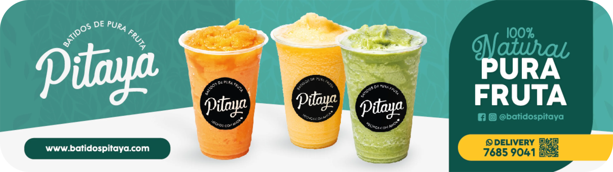
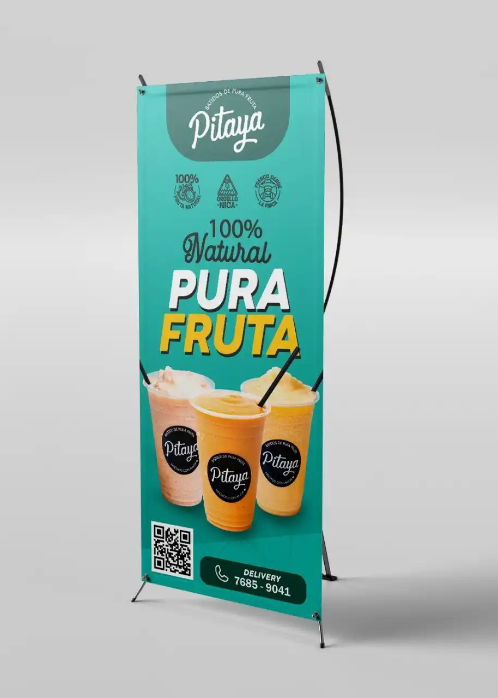
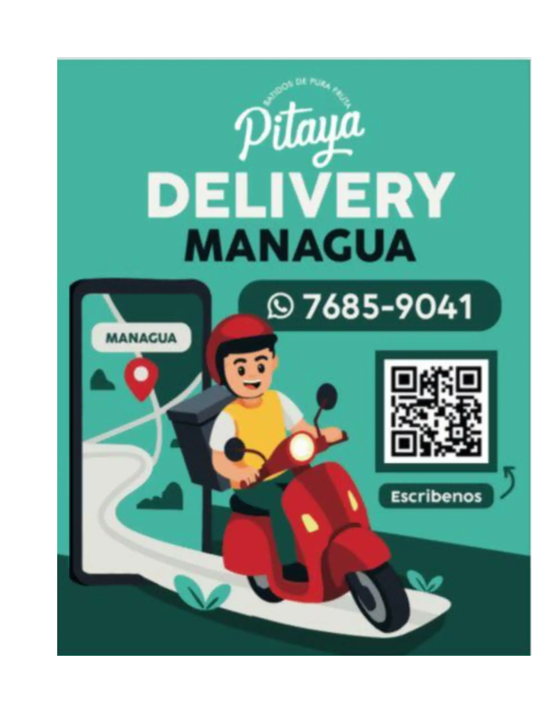

Impresos y Marketing



Reflexión
Batidos Pitaya me enseñó que el packaging es mucho más que un envase: es la primera conversación que una marca tiene con el consumidor. Diseñar para un producto físico me obligó a pensar en materiales, texturas y cómo la identidad visual se traduce en tres dimensiones, algo muy diferente al diseño digital.